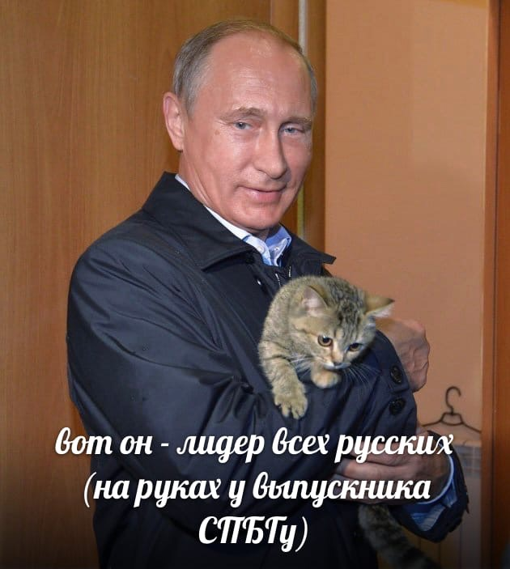

Cейчас будем играться с отображением текста!
Забавно, текст наоборот! То есть, справа налево.
А вот и нормальный текст.
Месяцы весеннего семестра:
| Cтолбец_1 |
Столбец_2 |
Столбец_3 |
Апрель, неожиданно? |
Столбец_5> |
| - |
- |
- |
+ |
- |
Я уже не знаю, что придума Русские кiты!!

Немного информации о настоящих русских:
- Коты это здорово
- Коты это круто
- Коты полезны для здоровья
- ...
- Есть гипоаллергенные породы: с ними можно не бояться аллергии!
- ...
- Коты - насстоящие русские
- ...
О котах можно долго говорить. Приведем некоторые примеры:
- Болбшой Шлёппа
- Шлёппа поменбше
- Совсем маленбкий Шлёппа